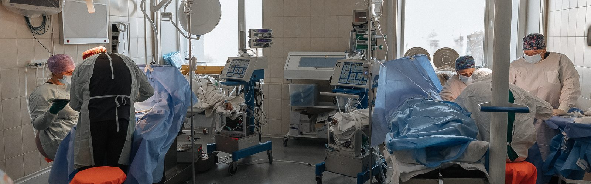
How the Institute of Neurosurgery Operates During the Full-Scale War
16.08.24
The Romodanov Institute of Neurosurgery of the National Academy of Medical Sciences of Ukraine is located in Kyiv, near one of the central metro stations. Over nearly two years of full-scale invasion, this area has repeatedly suffered from Russian attacks.
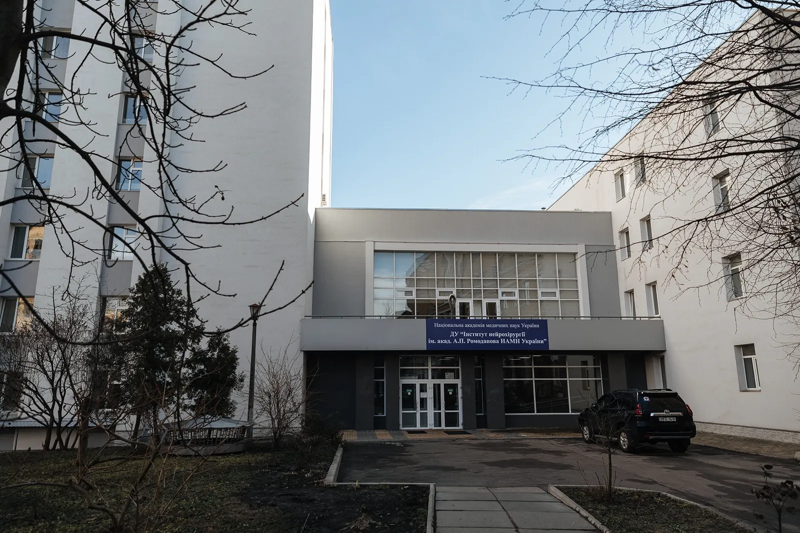
Fortunately, the Institute's building remains intact, but during a recent missile attack in December 2023, rocket fragments fell very close, damaging the metro station vestibule. So, we begin our conversation about neurosurgery during wartime with practical safety concerns:
— If an air raid alert sounds, we do not take patients to the operating room, — says Acting Director of the Institute, Corresponding Member of the National Academy of Medical Sciences of Ukraine, Professor Volodymyr Rozumenko. — But if the patient is already in the operating room, the doctors just keep working. Moving them to a shelter during complex surgical procedures is too risky.
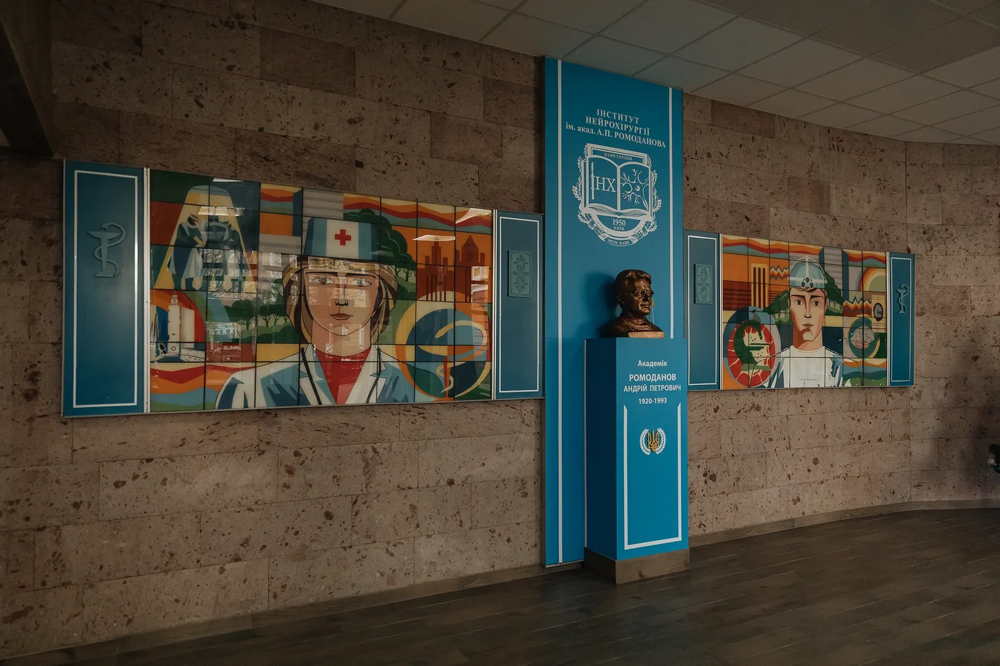
We visited the Institute on one of the few sunny days in December. In the bright light, the recently renovated buildings look welcoming and modern. Inside, the atmosphere is more like a state hospital. In the long narrow corridors, patients sit waiting for their turn, accompanied by the clattering of old elevators. Reception began at 8:30 a.m., and even in the afternoon, the queue of people has not dwindled.
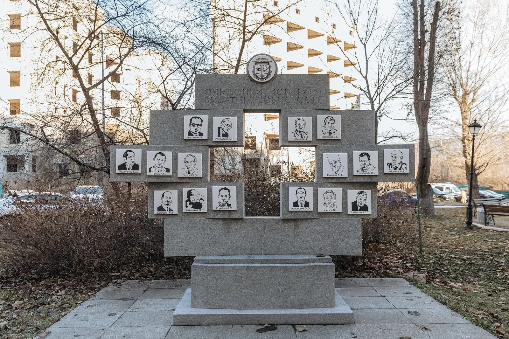
The Institute of Neurosurgery was established in 1950 based on the former Kyiv Psychoneurological Institute. Its founder and first director was a military doctor, neurosurgeon Oleksandr Arutyunov. Volodymyr Davydovych explains that in the former Soviet Union, the Institute of Neurosurgery was one of three specialized institutions involved in treating diseases of the brain, spinal cord, and peripheral nervous system. Today, the Institute consists of 15 departments, each with its specialization: endoscopic surgery of the skull base, strokes and hemorrhages, epilepsy, subtentorial surgery, neuro-oncology, vascular surgery, neuroimmunology, and more.
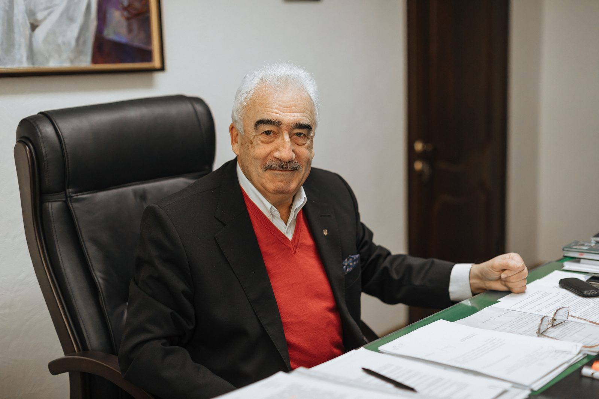
At the beginning of the full-scale invasion, the Institute experienced a period of turbulence. Although the doctors continued working from the first days of the full-scale war, logistics were disrupted. Some staff members could not reach the Institute, while others went to cities in the Kyiv region, such as Irpin and Bucha, to provide assistance directly at the front lines.
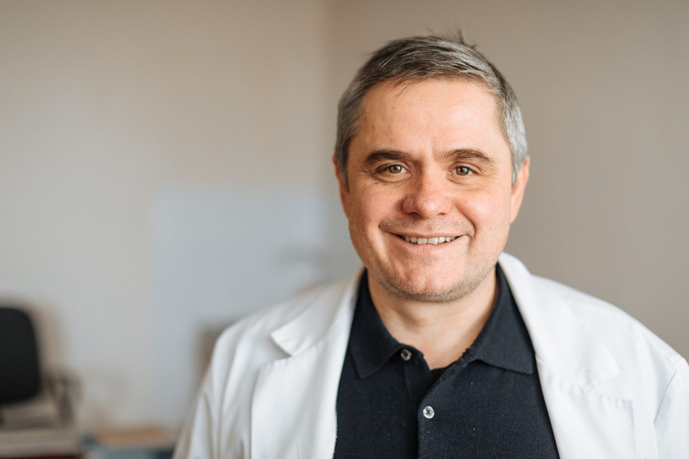
The war also affected patient routes, but not in the way the doctors expected:
— We thought that the number of civilian patients would decrease during the full-scale war, as about five million Ukrainians went abroad, — says neurosurgeon, Doctor of Medical Sciences, and Acting Deputy Director for Scientific Work Mykola Huk, — but it turned out to be the opposite. First, people often return from abroad to seek treatment at home because it's more convenient for them. Second, many surgical centers in the south and east have closed or been repurposed. And people who used to be treated there now come to us. In 2022, my department, which deals with pituitary tumors, performed 250 surgeries; this year, about 350.
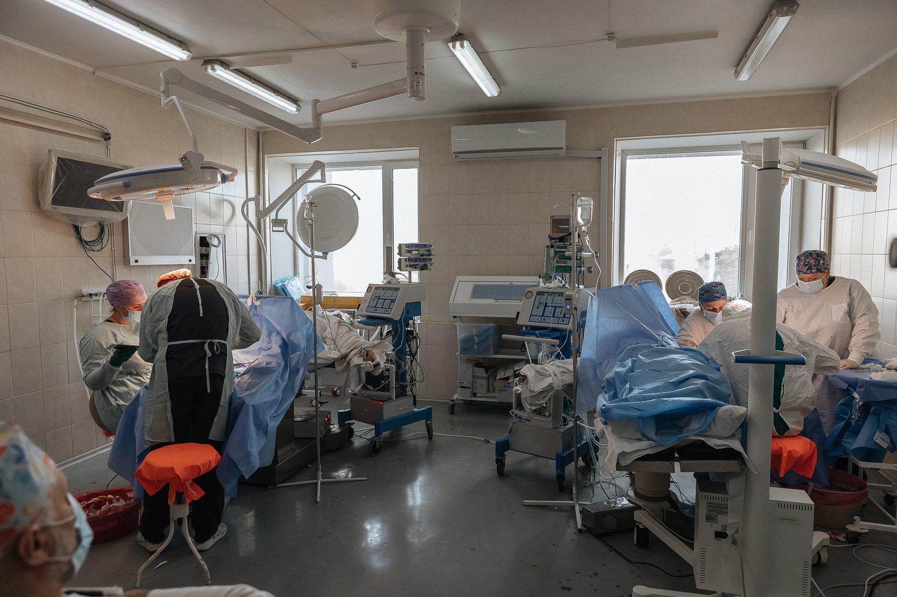
The number of military personnel being treated at the Institute of Neurosurgery has also increased. Last year, 2,200 wounded soldiers received care, Volodymyr Davydovych notes:
— Of the 260 patients at the Institute daily, 60-80 are military personnel.
The Institute of Neurosurgery is not a frontline hospital. Soldiers are admitted here later—to treat the consequences of injuries. Mykola Oleksandrovych lists the busiest departments:
— First, the spinal department, which deals with spinal injury surgery. These injuries can result from wounds or the excessive physical strain that soldiers face. Second, the neurotrauma department, where plastic surgeries are performed after head injuries. In this department, we use an innovative skull defect plastic surgery technique—creating custom-made titanium plates to cover missing skull fragments. But the most significant workload now falls on the peripheral nervous system clinic. Some doctors there are hardly seen, as they spend from morning to night in the operating room.
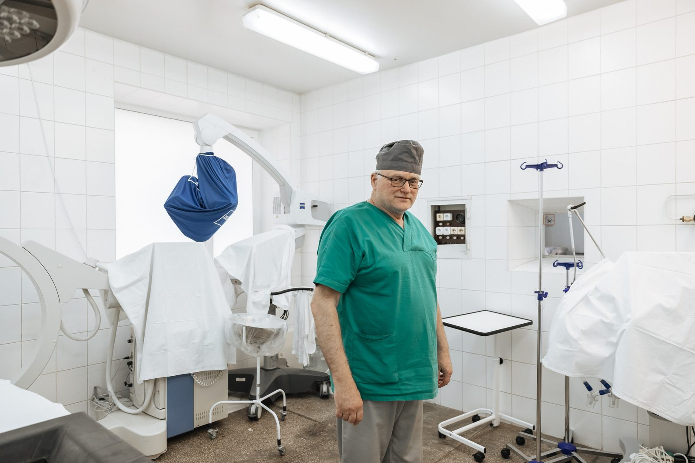
The peripheral nervous system clinic specializes in treating and restoring limb nerves. Professor Ihor Tretyak, head of the restorative neurosurgery clinic, says that peripheral nerve injuries occur very frequently during combat:
— You could say that we are now experiencing an epidemic of nerve injuries. Unlike the head and torso, protected by helmets and body armor, soldiers' arms and legs are very vulnerable to injuries. This is a serious problem, as limb nerve damage causes persistent impairments, such as loss of function in the arms, legs, or facial muscles, or pain syndrome after amputations.
In less than two years, more than 1,000 soldiers have received treatment in the restorative neurosurgery department. In more peaceful times, the department's surgeons performed 30-40 operations a month; now it's 80-90.
— It's unfortunate that in peacetime, there is no need to train so many specialists in nerve surgery, — adds Ihor Bohdanovych. — But now, during the war, there is a severe shortage of personnel.
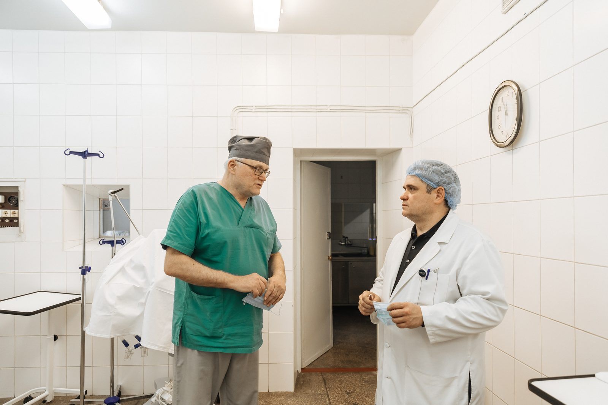
— Several specialists from France and Slovenia want to come to this clinic to learn the techniques of limb nerve repair, — adds Mykola Oleksandrovych. — In peaceful countries, they almost have no experience with this.
Not all patients with peripheral nerve injuries require surgery. Some need rehabilitation—a field that is not very developed in Ukraine. Compared to Germany, for example, Ukraine has far fewer rehabilitation and sports medicine doctors. However, the Institute has a department that focuses on rehabilitation and tries to follow European trends.
— If we talk about recovery in civilian medicine, our goal is to perform high-tech, minimally invasive surgeries that improve the patient's quality of life and do not require postoperative rehabilitation. This is the future of neurosurgery, — says Mykola Oleksandrovych.
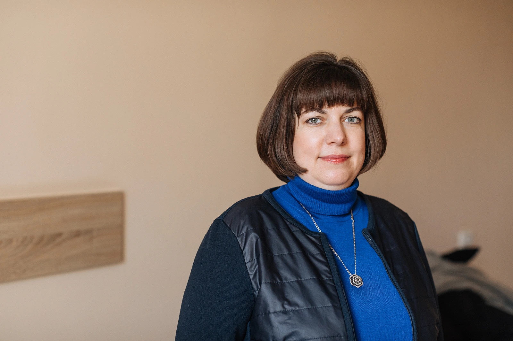
Through the winding corridors of the departments, we head to one of the Institute's most modern operating rooms, where endoscopic brain surgeries are performed. We are accompanied by Vera Vasyuta, a neuro-ophthalmologist and head of the scientific-organizational department. On the way, I ask about her profession:
— The most interesting work is always at the intersection of specialties. Neuro-ophthalmology deals with eye pathologies caused by brain diseases. For example, a brain tumor may develop, or a stroke may occur, affecting vision. A regular ophthalmologist can't help here, as the eye itself is healthy, but the problem lies in the brain. Neuro-ophthalmology is a very narrow field of medicine. Only 6% of ophthalmologists specialize in it. But there are plenty of patients with such problems—we examine about 150-200 people from all over Ukraine each week. We also treat soldiers who often have vision problems related to traumatic brain injuries.
On the way, we stop by a window where you can see a row of solar panels on the roof of one of the buildings—they were recently installed to improve energy efficiency. Last winter, the Institute mainly relied on help from the volunteer community, which provided generators and uninterruptible power supplies. Thanks to them, the operating rooms could continue working even during power outages.
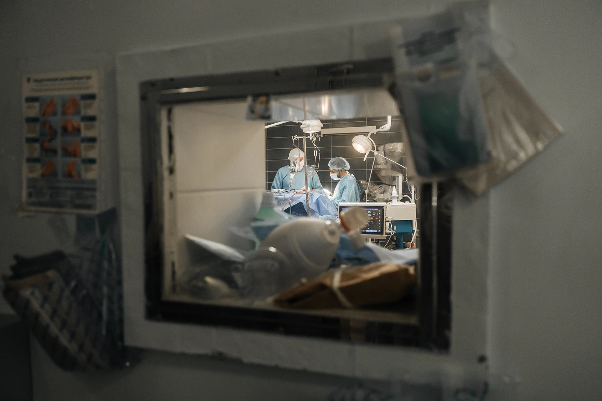
Before entering the operating room, Mykola Oleksandrovych calls out to the surgeon:
— Artur Olehivych? Is everything calm? We're about to do a photo report.
Most of the room is occupied by an operating table that allows the patient to be positioned in any way—even vertically. The room is filled with equipment—an operating microscope, a high-speed drill for drilling into the skull, a monitor for the anesthesiologist to monitor anesthesia. Each tool is duplicated by a spare one. If one fails, they immediately switch to another.
They are operating on a patient with a meningioma, a large benign tumor that formed from the brain's dura mater and affected the frontal lobes. Neurosurgeon Artur Mumlyev briefly looks away from the patient's head to quickly and clearly list the symptoms of such a tumor:
— Instability, headaches, and mental disorders.
The frontal lobes of the brain are responsible for our behavior. In the 20th century, such patients were often sent to psychiatric hospitals, not realizing that their behavioral disorders were caused by a brain tumor. Today, however, a surgery that can last up to 12 hours can completely cure the disease.
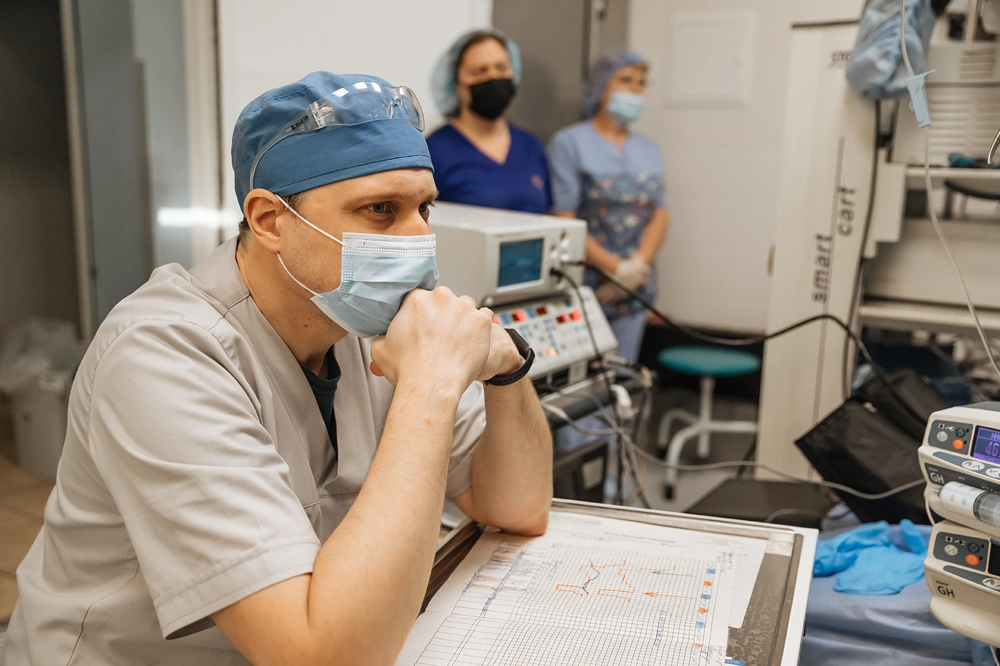
— Neurosurgery takes a lot of time, — says Mykola Oleksandrovych. — But if you are ready to give part of your life to it, you get the chance to create a miracle. To restore someone's life. That's why people love this specialty.
In the neighboring room, a post-operative examination is underway for a patient who recently had endonasal surgery through the nose:
— For such operations, we use a navigation system, — says Mykola Oleksandrovych. — It works like GPS. We load the patient's CT or MRI scans into it, and the system shows where we are during the operation.
Neurosurgery heavily depends on technology. The total cost of equipment in a modern operating room can reach up to a million dollars. But money is needed not only for equipment but also for research. This is a field of medicine that requires excessive, "aimless" funding, allowing doctors to focus on studying or creating new treatment methods without worrying about ongoing expenses. That's why the United States leads in neurosurgery, with much higher funding than European and, of course, Ukrainian centers.
— It's very difficult for us in this regard, — says Mykola Oleksandrovych. — Yes, we have certain technological directions: endoscopy, brain navigation, the use of lasers. We perform advanced surgeries to restore limb nerves. But we also often have to find ways to do something with fewer resources. If something abroad costs a hypothetical $50,000, we figure out how to do it much cheaper. This allows us to work in the current conditions. But there are no innovations here.
— Constant funding is needed—for improving rehabilitation, updating devices, increasing junior and mid-level staff, — he continues. — We lack a lot. But we also understand that the Institute of Neurosurgery is a superstructure over a very specific branch of medicine. Not every country can afford such an institute. That's why everything should develop harmoniously—the Institute's work and the state's prosperity. There cannot be a high-tech neurosurgery center in a poor country.
Finally, we ask what characteristic distinguishes a good neurosurgeon. After some thought, Mykola Oleksandrovych says that a good neurosurgeon must have a sense of humor:
— The ability to laugh at yourself prevents you from losing self-criticism, from becoming detached from reality. You know, there's a doctor's joke: "What's the difference between God and a neurosurgeon? God knows he's not a neurosurgeon." In reality, when a doctor starts to consider themselves as God, the biggest and most terrible mistakes happen. Modern neurosurgery tries to move away from the image of the perfect surgeon, the lone genius. Instead, the driving force is building teams. It's important to assemble a team of professionals who creatively complement and critically correct each other.
Changes in Ukrainian neurosurgery are happening slowly, but the most important thing is that they are happening in the minds of young neurosurgeons. The new generation of doctors understands what they want modern neurosurgery to be like and strives to learn from the best global centers. In the context of a full-scale war and insufficient funding, the path to the neurosurgery of the future seems quite long, but we must believe that it will eventually be overcome.
This series of reports was made possible with the support of the Documenting Ukraine project by the Institut für die Wissenschaften vom Menschen.